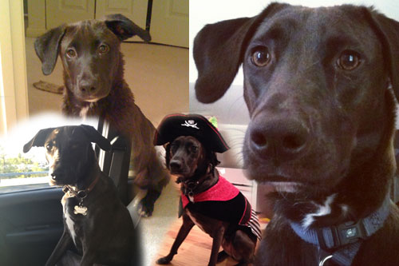

January 2014

Baxter is a 3 year old black lab mix who I rescued when he was 3 months old. And yes, he is named after Ron Burgundy’s beloved ‘Little Gentleman’ in the movie Anchorman. Baxter is THE happiest dog! He loves running, playing with his toys, long car rides, and walks around the neighborhood or along Front Street (especially with his best doggie friend)! The Bax also enjoys trips to the dog park and doggie daycare – basically, anywhere he can run around and interact with other dogs! He is an incredibly loving dog, and welcomes all of the guests to our house with excitement and lots of kisses! |